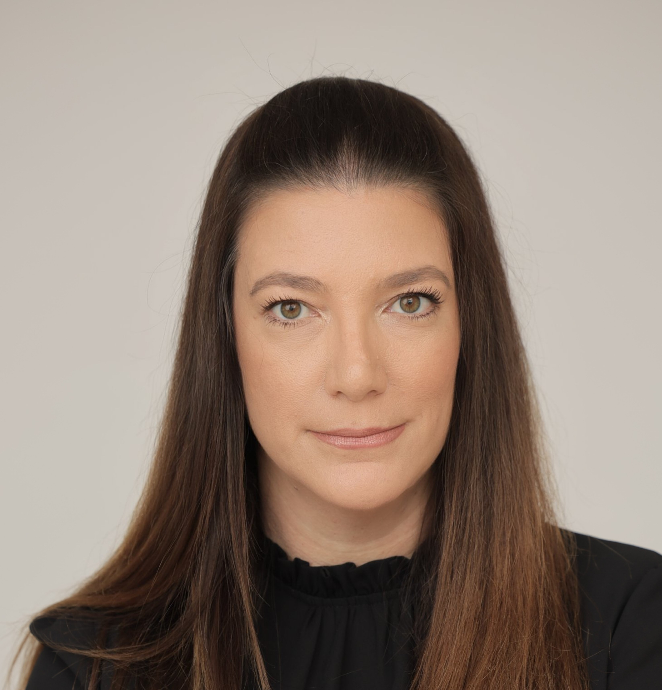
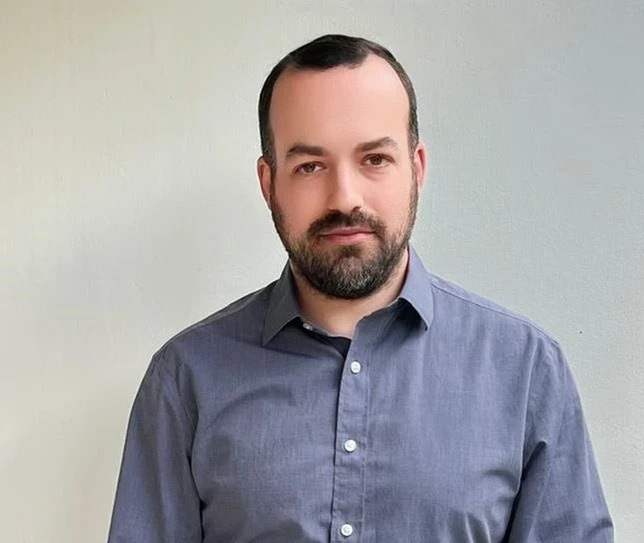

People

Specializes in corporate and securities law, empirical analysis of law, fintech, behavioral finance and financial decision-making. Visiting scholar at NYU, Columbia, Oxford, and LSE. Member of the ISA Advisory Committee on Capital Markets and Technology.
Moran Ofir is a Professor of Law and Finance at the Faculty of Law at the University of Haifa. She holds a Ph.D. in Finance from the Hebrew University of Jerusalem in a program of the Center for the Study of Rationality, in addition to an MBA in Finance and a Bachelor of Law (LL.B.). She has been a visiting scholar at the law faculties of NYU, Columbia, Oxford, LSE, and more. Prof. Ofir specializes in corporate and securities law, empirical analysis of law, fintech, behavioral finance and financial decision-making. Her research has been published in leading academic journals in both the field of law and finance and has won competitive research grants. The findings of her research have also appeared on academic and business blogs, have been discussed in podcasts and extensively covered in the media.
In addition to her academic and research activities, Prof. Ofir served as a member of the Israel Securities Authority (ISA) Advisory Committee on Capital Markets and Technology and as a panel member specializing in the capital market in the ISA's Administrative Enforcement Committee. She serves as an independent director and is a member of the Audit, Remuneration, Strategy and Capital Planning Committees of a commercial bank.

Uses advanced data science for research on corporate and securities law, focusing on informed trading in capital markets. Employs statistical analysis and machine learning.
Joshua Mitts, who joined the faculty in 2017 as associate professor of law and was named professor of law in 2022, uses advanced data science for his research on corporate and securities law. His primary focus is on informed trading in capital markets and related topics in law and finance. Mitts employs empirical methods, including statistical analysis and machine learning, for his research on short selling, securities lending, informed trading on cybersecurity breaches, information leakage and hedge fund activism, insider trading on corporate disclosures, and information transmission in financial markets.
Ph.D. Finance & Economics, Columbia Business School · J.D., Yale · B.A. summa cum laude, Georgetown
Research focuses on information privacy, cyber-security, algorithmic decisions, and law in the digital age. Former Fellow at Yale ISP and NYU Hauser Global Law School.
Tal Zarsky is Dean and a Professor of Law at the University of Haifa's Faculty of Law. His research focuses on Information Privacy, Cyber-Security, Internet Policy, Social Networks, Telecommunications Law, Online Commerce, Algorithmic Decisions and the Legal Theory of Private Law. He published numerous articles and book chapters in the U.S., Europe and Israel. His work is often cited in a variety of contexts related to law in the digital age. Prof. Zarsky has advised various regulators, legislators and commercial entities on matters related to his fields of expertise. He served on a variety of advisory boards and is a frequent evaluator of articles and research grants for various international foundations.
Prof. Zarsky was a Fellow at the Information Society Project, at Yale Law School and a Global Hauser Fellow, at NYU Law School. His academic visits and teaching appointments include the law schools at the universities of Pennsylvania, Amsterdam and Ottawa. He completed his doctorate dissertation, which focused on Data Mining in the Internet Society, at Columbia University School of Law. He earned a joint B.A. degree (law and psychology) at the Hebrew University with high honors and his master degree (in law) from Columbia University.

Research examines fintech regulation, digital assets, gamblified finance, and consumer protection. Forbes opinion columnist. Former corporate attorney at Skadden Arps. Incoming Deputy Director, Haifa Center for Cyber, Law, and Policy.
S.J.D., Penn · LL.M., Columbia · LL.B. & B.A. Economics, University of Haifa
Research examines the law and economics of consumer markets, with attention to how emerging technologies shape consumer welfare and distributional disparities.
Talia Gillis is the Daniel G. Ross Professor of Law at Columbia Law School and an affiliate of Columbia's Data Science Institute. Her research examines the law and economics of consumer markets, with particular attention to how emerging technologies shape consumer welfare and impact distributional disparities. A central focus of her research is the use of AI in consumer credit and its impact on fair lending practices and doctrine. She has served as Program Co-Chair for ACM FAccT 2025 and will serve as General Chair of the ACM Computer Science & Law Symposium in 2027. She holds a Ph.D. in Business Economics from Harvard University and an SJD from Harvard Law School. Prior to her doctoral studies, she earned a BCL from Oxford University and an LL.B. in Law and Economics from the Hebrew University.

Fellow of Harvard Business School's Project on Israel and the Regional Economy. Research focuses on venture capital law, startup governance, and employee equity compensation. Winner of the 2024 Cheshin Prize for Young Scholar.
J.S.D., Stanford Law School · LL.B. valedictorian, Hebrew University · Former clerk to two Chief Justices, Supreme Court of Israel
Postdoctoral Scholar at Columbia Law School. S.J.D. candidate at Harvard. Research focuses on corporate governance and securities regulation.
Leeor Ofer is a Postdoctoral Scholar at Columbia Law School, an editor of the Harvard Law School Forum on Corporate Governance, and a member of the Israeli Bar. She is also an S.J.D. candidate at Harvard Law School. Her research focuses on corporate governance and securities regulation. Before entering academia, Leeor worked as an associate at Gornitzky & Co., a leading Israeli law firm, where she advised corporations and directors on corporate governance, securities regulation, and insider trading matters. Leeor holds an LL.M. from Harvard Law School (requirements fulfilled, degree waived), an M.B.A. from the Hebrew University of Jerusalem (with a specialization in banking and finance), and an LL.B., magna cum laude, from the Hebrew University of Jerusalem.
Scholar of comparative insolvency and corporate finance law. Postdoctoral Researcher at the University of Haifa, working on the ISF project on startup ownership.
Dr. Matthew Chippin, JD (Dalhousie), PhD (Leeds), is a scholar of comparative insolvency and corporate finance law, with a focus on insolvency architecture, capital market structures, and market ordering in common law jurisdictions. His recent and forthcoming work appears in the Capital Markets Law Journal (OUP) and Trusts & Trustees (OUP), as well as in edited collections with Edward Elgar. Dr. Chippin is a Postdoctoral Researcher at the University of Haifa Faculty of Law, working with Prof. Yifat Aran on the Israel Science Foundation project "Theoretical and Comparative Analysis of Startup Ownership," and is currently developing a monograph, The Pari Passu Principle, for the Elgar Corporate and Insolvency Law and Practice series. He is also engaged with the Croatian-Canadian Business and Scientific Cluster, and has held visiting research positions at the University of Sydney Law School, the Marine and Environmental Law Institute at Dalhousie University's Schulich School of Law, and Arizona State University's Sandra Day O'Connor College of Law.
Academic Manager, Fischer Center for Corporate Governance at TAU. Former clerk to Justice Kasher, Supreme Court of Israel.
Alona Gueta is a Research Fellow at the Columbia–Haifa Global Markets Research Group. She also serves as the Academic Manager of the Fischer Center for Corporate Governance and as a Teaching and Research Assistant at Tel Aviv University's Faculty of Law. She formerly served as a law clerk to the Honorable Justice Yechiel Kasher of the Supreme Court of Israel, and as a Legal Associate in the Litigation Department at Meitar Law Offices. Alona holds an LL.B. (magna cum laude) from Tel Aviv University, where she served as an Editor of the TAU Journal of Law, Society & Culture. Her primary research interests are corporate law, corporate governance, and economic analysis of law.

Law & Economics Fellow at NYU. S.J.D. candidate at Harvard, Ph.D. candidate in Economics at Tel Aviv University.
Haggai is a Law and Economics Fellow at the NYU School of Law. He is also an SJD candidate and Olin Fellow at Harvard Law School and a PhD candidate in Economics at Tel Aviv University. Haggai's research lies at the intersection of consumer law, privacy and data protection, and the regulation of AI-enabled markets, with a focus on algorithmic price discrimination and personalized pricing in digital commerce. A second strand of his research examines judicial decision-making and litigation. He combines empirical, computational, and theoretical methods in his work. His scholarship has appeared in legal and interdisciplinary outlets, including the Journal of Legal Studies, PLoS ONE, and The Cambridge Handbook on Price Personalization and the Law.
Ph.D. student at Hebrew University. Research focuses on the regulation of AI, examining regulatory sandboxes and intermediaries.
Michael Sierra is a lawyer and a PhD student in law at the Hebrew University of Jerusalem. He is a James J. Shasha Fellow, a fellow at the Federmann Cyber Security Center, and a fellow at the Cheshin Center for Advanced Legal Studies. His research focuses on the regulation of artificial intelligence (AI) under the supervision of Prof. Yuval Shany and Prof. David Levi-Faur. His doctoral work examines regulatory intermediaries and regulatory sandboxes as tools for AI governance, drawing on insights from regulation theory and human rights law. He holds an LL.B. and an LL.M. (magna cum laude), as well as a B.A. (magna cum laude) in International Relations, all from the Hebrew University of Jerusalem. He has previously served as a research and teaching assistant at the Hebrew University and also worked at the Israel Democracy Institute and the Supreme Court of Israel.

Research focuses on corporate and insolvency law, with an emphasis on startup companies. Attorney at Salomon Lipschutz & Co.
Yasmin is a lawyer with an LL.B., cum laude, from Bar-Ilan University and an LL.M., cum laude (Dean's List), specializing in business and commercial law from the University of Haifa. Her research focuses on corporate and insolvency law, with an emphasis on startup companies.
Research interests in prediction markets and gamified trading platforms, examining the boundary between investment and gambling.
Noam Shpigler is an LL.M. student at the Hebrew University of Jerusalem, specializing in private and commercial law, and a graduate of its multidisciplinary "Machpil" program in law, philosophy, and economics. Her academic interests lie in prediction markets and gamified trading platforms, with particular attention to the changing profile of the typical investor, the ways in which short-term, event-based speculation blurs the boundary between investment and gambling, and the legal and regulatory challenges posed by wager-like products treated as financial instruments.
Research focuses on corporate governance, board decision-making, and executive compensation. Incoming Supreme Court clerk.
Ariel Shillo is a fourth-year student in the interdisciplinary "Machpil" program at the Hebrew University of Jerusalem, combining law, economics, and philosophy. She is scheduled to clerk at the Supreme Court of Israel beginning in September 2026. Her academic work focuses on corporate law, with particular interest in corporate governance, board decision-making, executive compensation, and the interaction between regulation and firm behavior. She has co-authored several forthcoming articles addressing topics such as board overload, ESG, and revolving doors in the context of corporate law, with publications expected in journals including the Washington University Law Review and the Arizona State Law Journal. Alongside her research, Ariel serves as an Articles Editor of Mishpatim Law Review and as a research and teaching assistant in corporate law, and has gained practical experience in regulatory policy and corporate legal work.
Incoming J.D. student at Columbia Law School. Research interests span international law and economics and cross-border markets.
Elisha Baker is a Student Fellow at the Columbia-Haifa Global Markets Research Group and an incoming student at Columbia Law School, where he will begin his J.D. in Fall 2026 after graduating from Columbia University in May 2026. His research interests span international law and economics, cross-border markets, and foreign policy, with a particular focus on U.S.-Israel and Israeli-Arab relations. At Columbia, Elisha serves as a research assistant to Professor Joshua Mitts, where he has worked on topics including Israeli M&A, prediction markets, Jewish civil rights, and university governance. Elisha is chair emeritus of Columbia Aryeh, a student-led Israel education and advocacy group, and a Geller International Senior Fellow at the Israel on Campus Coalition.
Head Articles Editor, Columbia Journal of Transnational Law. Interested in law and finance, especially new technologies in the financial landscape.
Elijah Patrick Emery is a third-year student at Columbia Law School, originally from Yonkers, NY. He is interested in the intricacies between law and strategy and the law of finance, especially the impact of new technologies on the financial landscape. At Columbia, he serves as Head Articles Editor of the Columbia Journal of Transnational Law. Upon graduation, Elijah will join Cleary Gottlieb Steen & Hamilton as an associate. He is drawn to the ways legal frameworks shape — and are shaped by — financial markets and institutional decision-making, and is excited to be joining the Columbia-Haifa Global Markets Research Group to better understand the frontiers of global markets, law and economics, and technology and policy.
Member, Columbia Business Law Review. Research interests in global capital markets, financial regulation, and law and economics.
Ethan Horowitz is a J.D. Candidate at Columbia Law School. He holds a B.A., magna cum laude, in Political Economy with a minor in Business Law from the University of Southern California. At Columbia, Ethan is a member of the Columbia Business Law Review, where he has written on issues of corporate law and policy. His prior professional experience includes a summer associate position at Kirkland & Ellis LLP, as well as positions at Morgan Stanley wealth management compliance and the Chancery Division of the New Jersey Superior Court. His research interests lie at the intersection of global capital markets, financial regulation, and law and economics.
Qualified English solicitor. Trained at Mayer Brown (London) in cross-border PE, M&A, and financing. Interests in global capital markets and fund formation.
Mary Suberu is a law candidate at Columbia Law School in New York, where she is deeply engaged in the legal and financial community through leadership roles and affiliations with organizations such as the NYC Bar Association and Black Law Student Association. She trained at Mayer Brown in London, where she became a qualified English solicitor and advised on complex cross-border private equity, M&A, and financing transactions spanning the U.S., U.K., and European markets. Building on this international foundation, Mary is focused on leveraging her London-based transactional experience to navigate and contribute to the U.S. legal market, particularly in New York's dynamic financial sector. Her interests lie in global capital markets, fund formation, and sophisticated deal structuring. She brings a strong commercial perspective, French language skills, and a proven ability to operate across jurisdictions.